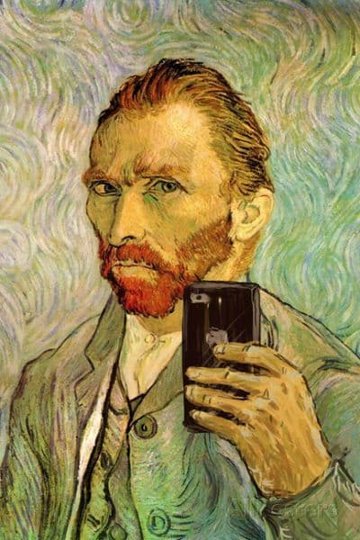
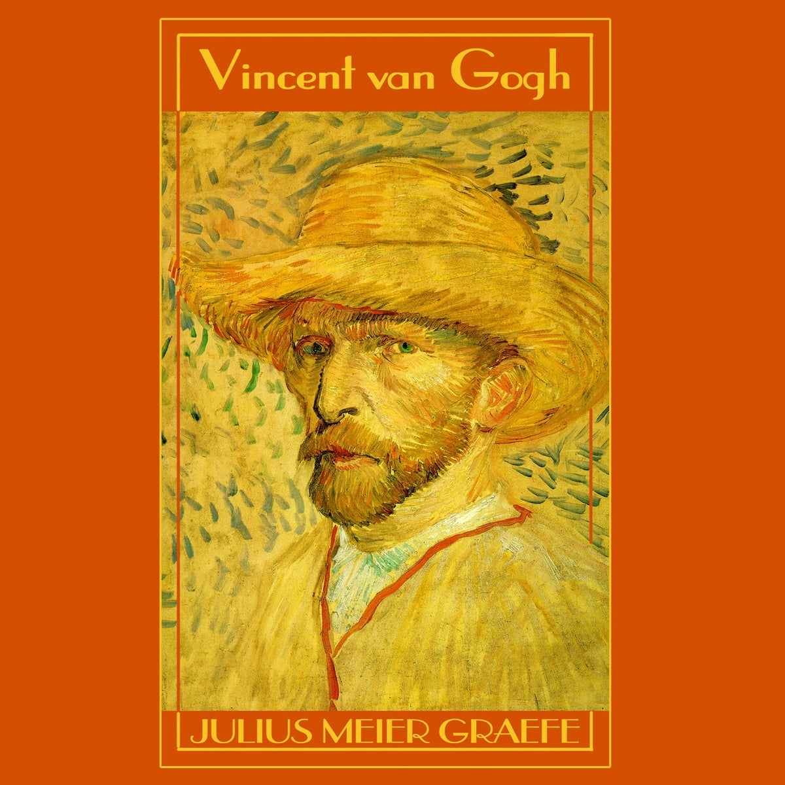
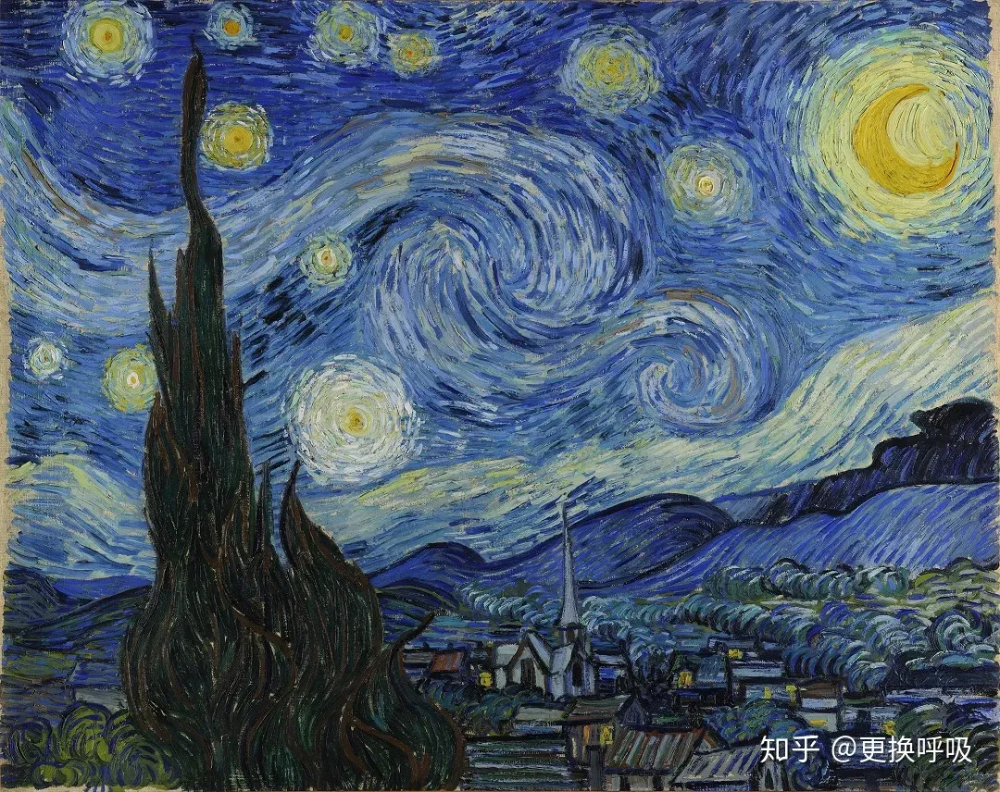
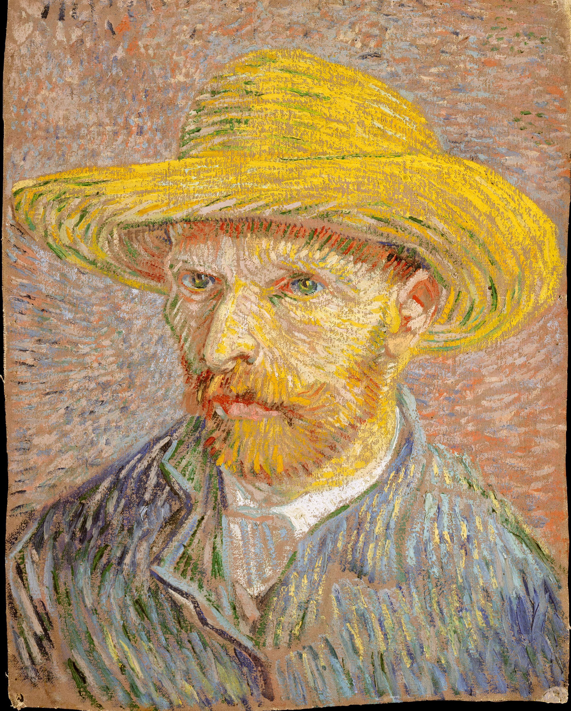
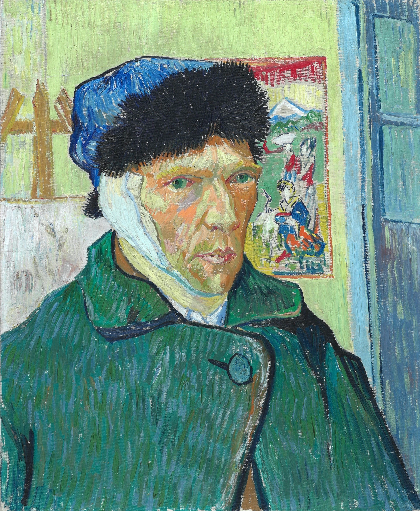
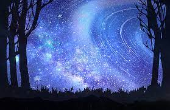

文森·威廉·梵高，早年曾译梵高柯，荷兰后印象派画家。他是表现主义的先驱，并深深影响了二十世纪艺术，尤其是野兽派与德国表现主义。梵高的作品，如《星夜》、《向日葵》、《有乌鸦的麦田》等，现已跻身于全球最知名的艺术作品的行列。他在2004年票选最伟大的荷兰人当中，排名第十，次于第九伟大的17世纪画家林布兰。

梵高的家庭关系较为复杂。他出生于荷兰一个中产阶级家庭，父亲是一名牧师。他有两个兄弟和三个姐妹。其中，他与弟弟提奥的关系较为紧密，提奥曾多次支持梵高的艺术创作，并在他生命的最后几年扮演了重要角色。 梵高的家庭成员对于他的艺术和生活选择持有不同的看法。他与家人之间的关系在一些时候较为紧张，尤其是在他的画家生涯初期。然而，随着时间的推移，他的弟弟提奥成为了他的艺术支持者和财务赞助人，这使得梵高能够专注于创作。 总的来说，梵高的家庭关系在他的一生中既有矛盾也有支持，这在一定程度上影响了他的艺术和个人发展。

梵高是一位荷兰后印象派画家，以独特的绘画风格和多产的创作闻名。他创作了900多幅画作和1100多幅素描，在生前并未获得广泛认可。他的作品充满情感，色彩丰富，以浓郁的笔触和夸张的风格著称。由于精神健康问题的折磨，他在1890年自杀身亡，但他的作品后来获得了广泛认可，对现代艺术产生了深远影响。

梵高的两个主要贡献是：
后印象派风格的创新： 梵高的绘画风格在后印象派中独树一帜。他以浓郁的颜色和独特的笔触创造了一种视觉上引人入胜的表现方式，强调情感和情绪的表达。这种风格对后来的艺术运动产生了深远影响，激发了其他艺术家去探索独特的创作方式。
自画像的探索： 梵高创作了大量的自画像，这不仅是他对自身形象的表达，也是他对内心情感和思想的反映。通过这些作品，他在艺术中开辟了一条新的道路，鼓励后来的艺术家去深入挖掘自我和内在的世界。 这两个方面的贡献使梵高成为艺术史上的重要人物之一，他的创作风格和表现方式在现代艺术的发展中产生了深远的影响。

梵高的争议主要体现在他的艺术风格、心理健康问题以及与其他人的关系上。他的后印象派风格在当时并不被广泛接受，而是受到争议的焦点。他的画作充满了浓烈的色彩和粗糙的笔触，这与当时传统的绘画观念有所不同，因此受到了不少批评。 此外，梵高的心理健康问题也引发了争议。他的精神状态不稳定，曾多次入院接受治疗。一些人认为他的艺术创作受到了这些问题的影响，而另一些人则认为正是这种痛苦的体验赋予了他的作品独特的深度和情感。 与家人、朋友以及其他艺术家的关系也常常引发争议。他与兄弟、高更等人的冲突和分歧，以及他在阿尔勒黄屋事件中割下自己的耳朵等行为都成为了广泛讨论的话题。 总的来说，梵高的争议主要围绕着他的艺术风格、心理健康问题和个人生活中的种种事件，这些都为后世留下了一个充满矛盾和深刻的形象。

梵高是一位著名的荷兰后印象派画家，他的一生充满了情感起伏和矛盾。他热爱艺术，创作了许多著名的作品，但同时也经历了心理健康问题。他与家人、朋友和其他艺术家之间的关系经常充满了爱恨情仇，尤其是与他的兄弟和朋友高更之间的复杂关系。梵高的情感起伏不仅在他的作品中体现出来，还在他的个人日记和信件中有所记录。他的生平充满了战斗，但也创造了许多永恒的艺术作品